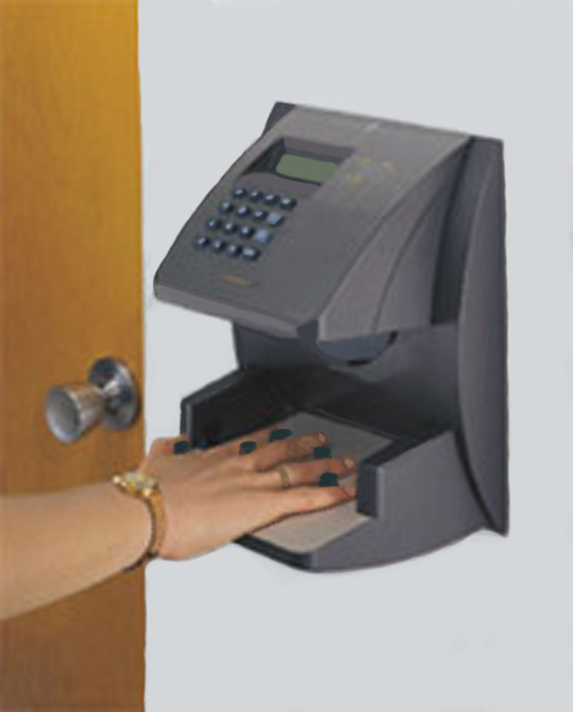
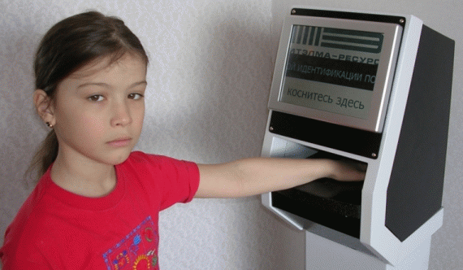
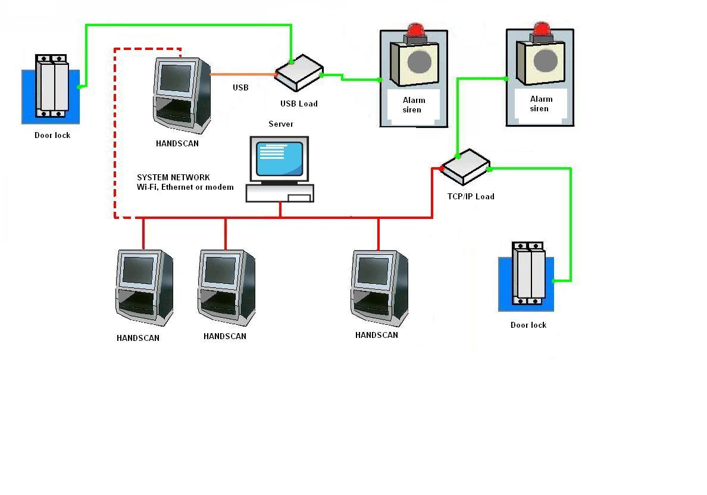
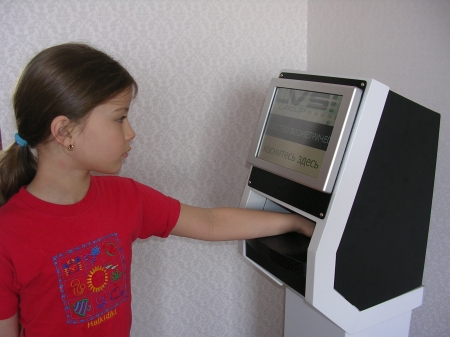

|
Электронная система идентификации личности по биометрии руки Handscan
На сегодняшний момент в мире существует в основном одна система идентификации личности по биометрии кисти руки. Это система, выпускаемая в США, т.н. ''Handkey''. (см. фото1 )

Фото 1.
Система "Handkey" использует для идентификации биометрические параметры кисти руки, полученные из снимков этой руки. Снимки делаются встроенной в аппарат камерой.
При всех своих достоинствах, эта система имеет ряд неудобств и недостатков. Так, при расположении кисти руки на измерительной площадке, приходится располагать кисть соответственно калибровочным штырькам (см.фото1). Это отнимает время на позиционирование. К тому же, возникают проблемы в случае расположения не совсем стандартной руки - очень маленькой или очень большой. Камеры, используемые в ''Handkey'' имеют довольно низкое разрешение, что ухудшает точность измерений.
При всем этом, аппарат "Handkey" является только консольным устройством, т.е. не может, например, быть самостоятельным сетевым ресурсом. Также интерфейс общения с пользователем довольно ограниченный по возможностям.
Нами была разработана электронная система, также использующая для идентификации личности биометрические параметры кисти руки. Она получила название "Handscan" (см. фото 2).

Фото 2.
Система "Handscan"является уникальной на данный момент. Были учтены все недостатки системы "Handkey". Так, теперь пользователь имеет возможность располагать руку на измерительной площадке довольно свободно (под разными углами наклона и свободно варьируемой степенью сдвинутости пальцев).
При этом сам аппарат "Handscan" является полнофункциональным современным компьютером, со всеми вытекающими возможностями.
Для интерфейса с пользователем имеется цветной монитор со встроенным контактным экраном (Touchscreen), что позволяет отображать информацию для пользователя любой сложности, причем без помощи дополнительной клавиатуры.
Надо иметь ввиду, что данный аппарат может функционировать как в одиночном режиме, так и в составе сети (с возможностями удаленного управления и администрирования). Структура сети может быть любой
(например, проводной или беспроводной). Базы данных могут храниться на любом из cетевых устройств "Handscan". При этом, репликация (обновление) баз данных происходит автоматически для всех устройств данной сети. Аппарат "Handscan"может управлять различными силовыми исполнительными механизмами : лампами, эл.двигателями, эл.магн. замками и т.д.Возможная структура сети с использованием устройств типа "Handscan" приведена на рис.1

Рис.1
Также имеется возможность использования дополнительных устройств
(клавиатуры, доп. монитора, принтера, картридера и т.д.) для аппарата
"Handscan" и возможность его апгрейда, соответственно требованиям пользователя.
Метод биометрической идентификации является уникальным и не имеет аналогов.
Программное обеспечение также является уникальным и рассчитано на операционную систему "Windows XP".
Примеры применения.
Система "Handscan" может найти применение в различных структурах, имеющих регламентированный допуск. Например, в школе, где необходимо, с одной стороны, не допустить посторонние лица, с другой, отследить график ухода/прихода "своего" человека. Основной контингент школы - учащиеся, т.е. люди не имеющие паспортов или др. документов удостоверяющих личность. Кроме того, дети часто теряют даже специально заведенные пропуска.

Фото 3.
В таком случае, организация системы допуска по биометрии руки будет вполне уместна и оправдана.В случае сильных изменений в биометрии руки отдельного лица ( рука выросла или случилась травма) всегда можно оперативно произвести перерегистрацию.
В случае обязательного применения пропусков, биометрия руки может служить своеобразной "подписью", проверка которой может удостоверить, что пропуск предъявил именно владелец, а не лицо незаконно владеющее им.
|
|